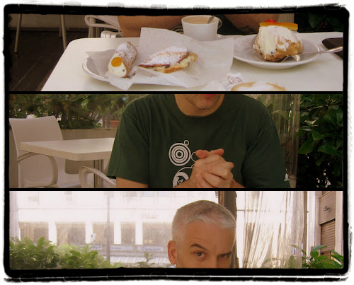
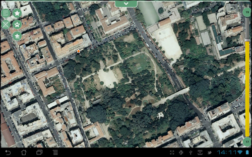
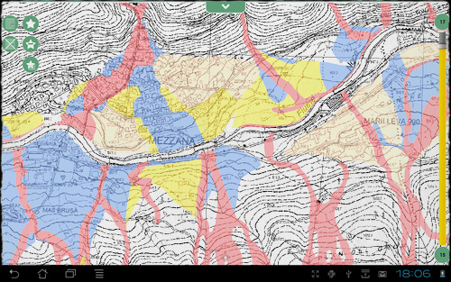

Dopo essere stati a Bolzano raggiungiamo Bari per la seconda “puntata” di questa doppia intervista. Quanto è diverso avviare una startup in Trentino o in Puglia? Ne parlo con Vincenzo Barbieri, cofondatore di Planetek.
Planetek Italia ha sede a Bari ed impiega circa 50 persone. Abbiamo una sister company ad Atene,Planetek Hellas, e abbiamo fondato due spinoff: Geo-k a Roma, con l’Università di Tor Vergata, e GAP a Bari, con il Politecnico.
Di cosa ti occupi?
Siamo specializzati nell’erogazione di servizi e prodotti nell’ambito della geomatica e dello spazio.
Quando hai avviato la tua impresa?
Dopo la laurea ho conseguito un master in pianificazione del territorio e contestualmente ho avviato l’azienda nel 1994 con gli altri soci fondatori.
Quando hai iniziato che collegamenti avevi con gli istituti di ricerca?
Abbiamo avviato la Planetek Italia utilizzando le facility messe a disposizione dall’incubatore di imprese Tecnopolis (oggi Innovapuglia, nel 1994 centro di ricerca applicata della Regione Puglia).
Che vantaggi hai avuto nel creare un’impresa in Puglia?
Quando siamo nati abbiamo presentato una richiesta di finanziamento per l’imprenditoria giovanile, ma la nostra richiesta è stata bocciata perché il piano era troppo ambizioso per un mercato che, secondo i valutatori, non sarebbe stato in grado di sostenere una iniziativa di questo genere. Oggi posso dire: per fortuna hanno bocciato la nostra richiesta, quello che ci serviva lo abbiamo acquistato con i nostri sacrifici ed ogni lira è stata sempre ben spesa. I finanziamenti ti inducono ad imbottirti di tecnologia, ma puoi pagarne care le conseguenze. Gli ammortamenti elevati possono uccidere le nuove imprese che non hanno le spalle abbastanza larghe per sopravvivere alle piccole crisi finanziarie.
Nel 1994 l’utilizzo dell’incubatore di impresa ci ha consentito di accedere a risorse tecnologiche che altrimenti non avremmo potuto acquisire. Tecnopolis disponeva di un collegamento Internet molto veloce quando ancora Internet non era diffusa, in pratica non si sapeva cosa fosse. Questo ci ha reso da subito un’azienda internazionale. Avevamo poi a disposizione delle workstation Unix dotate di software GIS e di Image Processing (Remote Sensing) che ci hanno consentito di poter erogare servizi senza dover fare investimenti che non avremmo potuto sostenere. Inoltre la prossimità fisica e la condivisione degli spazi con i tecnici del centro di ricerca ci hanno aiutato ad avere immediata conoscenza di quanto avveniva nel settore della geomatica. Infine a Bari abbiamo un buon politecnico ed un’università che ci mettono a disposizione neolaureati da inserire in azienda.
Che difficoltà hai avuto?
La logistica non ci ha sempre aiutato. Anche se a Bari abbiamo un buon aeroporto, con molti collegamenti, inizialmente era problematico raggiungere le principali città europee. Oggi la situazione è molto migliorata grazie alla possibilità di realizzare videoconferenze al posto delle conferenze fisiche, e il costo dei biglietti aerei si è ridotto significativamente rispetto ai primi anni di vita dell’azienda.
Come pensi potrebbe essere avviare un’impresa in un altro contesto geografico?
Potremmo avere una logistica più efficiente se fossimo in prossimità di mercati più ampi, ad esempio quelli della Lombardia, del Piemonte oppure del Lazio, dove è massiccia la presenza di amministrazioni centrali. Sarebbe inoltre utile operare in stretto contatto con altre aziende con attività complementari alle nostre, con cui organizzare filiere verticali e/o orizzontali.
Cosa ti sarebbe utile nel luogo in cui sei?
Una Pubblica Amministrazione in grado di richiedere e saper riconoscere ICT di qualità, infatti per noi attualmente il mercato locale non rappresenta un volano di sviluppo.
Infine, maggiore capacità di aggregazione tra gli operatori economici e più in generale tra tutti i soggetti interessati (PA, mondo della ricerca, ecc.). Disporre di una massa critica è indispensabile per poter competere sul mercato e non subire gli eventi, se non sei parte di un grande gruppo devi necessariamente collaborare con altre aziende, ma purtroppo la propensione a lavorare in modo sinergico non è molto diffusa.
Bolzano chiama Bari
Caricamento delle mappe in corso - restare in attesa...
Che differenza c’è tra avviare una startup in Trentino-Alto Adige e farlo in Puglia? È una domanda all’apparenza banale, ma dietro la nascita di un’azienda ad elevata vocazione innovativa ci sono valutazioni ed esperienze di particolare interesse. Per comprenderle ho intervistato Andrea Antonello di HydroloGIS, un’azienda che sviluppa modelli software in campo ambientale con sede a Bolzano, e Vincenzo Barbieri di Planetek Italia, azienda barese che applica l’informatica alla gestione territoriale di Bari. Pubblichiamo le interviste separatamente facendo però presente che ognuna va considerata alla luce dell’altra.
Chi sei?
Mi chiamo Andrea Antonello, nato a Merano nel 1973 e vissuto fra Merano, Bolzano, Trento e, anche se per un periodo breve, a Bologna. Mi sono laureato a Trento in Ingegneria Civile con indirizzo ambientale ed ho un dottorato in Scienze della Terra conseguito a Urbino. Sono socio fondatore di HydroloGIS S.r.l., azienda specializzata in sviluppo e modellazione in campo idrologico, geomorfologico ed idraulico integrati in ambiente GIS.
Dove operi?
Principalmente in Trentino-Alto Adige. Abbiamo collaborazioni anche in altre regioni, principalmente del nord Italia. Un esempio è il Piemonte con l’ARPA oppure la collaborazione di una nostra socia con ISPRA a Roma. Ci sono poi dei progetti di cooperazione, per i quali abbiamo lavorato in Rwanda e stiamo iniziando in Etiopia.
Di cosa ti occupi?
Principalmente di ingegneria ambientale. La nostra attività è incentrata sullo studio delle acque superficiali. Trattiamo il rischio idrogeologico, acquedotti, fognature, centrali idroelettriche ed energie rinnovabili. Utilizziamo quasi esclusivamente software di produzione interna.
Quando hai avviato la tua impresa?
La mia collega ed io abbiamo fondato l’azienda nel 2005, dopo aver lavorato per circa tre anni come consulenti esterni alla facoltà di ingegneria di Trento. Negli anni di lavoro all’università abbiamo ottenuto gli “strumenti” che poi ci hanno permesso di fondare HydroloGIS. Nonostante allora non fosse possibile fondare spin-off nella nostra facoltà, ci sentiamo comunque un po’ suoi figli.
Quando hai iniziato che collegamenti avevi con gli istituti di ricerca?
Il legame con l’Università di Trento è stato da subito fortissimo ed è ancora molto importante. La strategia di HydroloGIS è sempre stata quella di rimanere il più possibile nel campo della ricerca. Abbiamo avuto collaborazioni con le università di Trento, Urbino e Bolzano. All’inizio non avevamo alcun contatto con enti pubblici e neppure con società private. Ci venne detto che non era “sano” essere legati solo a enti di ricerca e che la forza sta nei collegamenti fra società private. Oggi posso dire che sono parole sacrosante.
Che vantaggi hai avuto nel creare un impresa in Trentino?
Fondare l’azienda a Bolzano ci ha dato un vantaggio importante: il supporto dell’incubatore di impresenel quale tuttora viviamo, sotto forma di ”azienda tecnologica”. Per il resto è stato molto difficile per noi trovare lavoro in Alto Adige. Il nostro settore è di nicchia e particolarmente collegato alle pubbliche amministrazioni. È difficile imporsi in un mercato che risulta essere abbastanza chiuso. Abbiamo avuto vita più facile in Trentino, dove il nostro collegamento con l’università è stato un buon biglietto da visita. Devo aggiungere che in Alto Adige, almeno da quando siamo attivi noi, c’è molto interesse per la ricerca e sviluppo in ambito ambientale e ciò ci ha permesso di partecipare a concorsi e bandi di finanziamento, al di là delle attività di lavoro per terzi.
Che difficoltà hai avuto?
Faccio fatica a rispondere a questa domanda. Non credo che ci siano reali svantaggi qui in Trentino-Alto Adige, non ho però sufficienti elementi per valutare altre realtà più o meno fortunate. Credo che la reale difficoltà stia nel riuscire a imporsi sul mercato riuscendo ad ottenere la fiducia dei possibili clienti. Di lavoro ce ne sarebbe, anche parecchio, il problema è che in superficie questa cosa non appare, perché in qualunque realtà i canali sono solitamente già consolidati. Forse l’aspetto più delicato è che ci si trova in un mercato piccolo dove molte attività nel nostro campo sono già state affrontate, con più o meno successo. In altri contesti ci sarebbe tutto da fare e sicuramente meno concorrenza specializzata.
Come pensi potrebbe essere avviare un’impresa in un altro contesto geografico?
Avere un’impresa in un luogo dove il nostro settore è poco sviluppato ed il mercato è più ampio potrebbe essere interessante. Spesso ci si trova a dover sostenere colleghi in altre regioni o nel mondo, probabilmente sarebbe più facile se fossimo presenti in tali situazioni. Come si dice, “nemo propheta in patria”…
Cosa ti sarebbe utile nel luogo dove sei?
Non mi viene in mente nulla in particolare. Ci sono alcune possibiltà a cui qui non abbiamo accesso, ma è più che altro un problema di dimensione aziendale.
Bolzano chiama Bari
Caricamento delle mappe in corso - restare in attesa...
Subito due premesse: la prima è che lo stupido titolo fa riferimento alle pecore, la seconda è che questo post avrebbe dovuto essere pubblicato nella categoria “Up, close and personal” che da tempo abbiamo rimosso.
Uso Geopararazzi da tempo, e ho il privilegio e il piacere di conoscerne l’autore: Andrea Antonello. Sino a pochi giorni fa era però soltanto una conoscenza virtuale, ma il 27 aprile scorso è venuto trascorrere tre giorni di relax nella mia Palermo, spesi in visite lampo tra i numerosi beni culturali e ambientali di questa terra.
Una compagnia fissa è stata la ricotta: abbiamo iniziato con le muffolette, continuato con le cassatelle e chiuso con sfince di San Giuseppe e cannoli.

A Palermo (ed in quasi tutta la Sicilia) la ricotta è (quasi) soltanto di pecora. Credetemi è qualcosa di superiore, senza rivali nella sua categoria.
Io e Andrea siamo dei nerd geek normalmente “incollati” davanti al PC, ma il molto bello, il molto buono e dei strani superpoteri hanno preso il sopravvento e in questi giorni insieme siamo stati lontani da qualsiasi computer e abbiamo parlato di geomatica soltanto 10 minuti. Eravamo in macchina verso la “Riserva dello Zingaro”:
Andrea B. : Sarebbe bello in Geopaparazzi poter inserire come mappa di sfondo una propria base cartografica (una carta tecnica, una porzione di ortofoto, ecc.). Non dovrebbe essere difficile replicando il meccanismo di accesso ai tasselli dei layer ufficiali (OpenStreetMap, CycleMap, CloudMade, ecc.). Andrea A. : Ci penso da tempo, ed avevo chiesto a tizio caio di mandarmi dei dati per fare un test, ma non li ho ancora ricevuti. Andrea B. : Allora te li mando io
Un software come questo, utile per fare rilievi sul campo con uno smartphone, deve avere la possibilità di inserire come sfondo una proprio layer di sfondo; per ragioni legate ad una migliore qualità di rappresentazione, ad una maggiore risoluzione, ad un temastismo più adeguato e ad una data di aggiornamento più recente delle basi scelte.
Rientrato Andrea a Bolzano, gli mando subito il link al servizio pubblicato in tile caching dal S.I.T.R. Infrastruttura Dati Territoriale della Regione Siciliana (segnalatomi da Agostino Cirasa), e gli propongo di fare dei test con questo.
Stordito piacevolmente dalla ricotta ancora in circolo nel suo sangue, riesce subito ad ottenere un risultato. Con lui tutto sembra sempre molto facile, perché è una vera cintura nera di sviluppo in Java di applicazioni spaziali, ed è uno che ci mette sempre molta energia e positività.

Facciamo allora subito altri test, a partire da basi a sua disposizione ed abbiamo però qualche piccolo problema.
OpenStreetMap, Google Maps, Bing maps, Yahoo! maps e molti altri provider cartografici pubblicano i propri dati utilizzando meccanismi di tile caching che sfruttano la stessa proiezione (EPSG:3785), lo stesso taglio di tasselli, la stessa risoluzione e la stessa definizione dei livelli di zoom. L’unica differenza è nel modo in cui vengono indicizzati, e le chiamate dei client devono tenerne conto, in modo da scaricare il tassello corretto per quella zona a quel dato livelo di zoom. Il nostro problema nasceva banalmente proprio da qui: avevo generato dei tasselli secondo lo schema OGC, mentre Geopaparazzi se li aspetta secondo lo schema OSM.
Per fortuna è soltanto una questione di indici, e analizzato e compreso insieme con Andrea il problema, lui ha subito scritto il codice necessario a fare dialogare il suo software con lo schema OGC (e con altri), e finalmente abbiamo iniziato a visualizzare le nostre basi basi come layer di sfondo.

Come vi dicevo Andrea è bravo ed energico, ed in poche ore ha creato anche un motore per generare comodamente dalla GUI di uDig – tramite i JGrasstools - cartelle di tasselli da usare come source per Geopaparazzi, ed ha scritto il codice per abilitarne l’accesso anche da uDig.
Tutto questo lo vedrete nella prossima versione di Geopaparazzi e questo vale soltanto come post di annuncio; al rilascio ne daremo conto anche qui, con dei contributi più “tecnici” e pratici.
E’ stata la prima volta che ci siamo messi in gioco insieme su qualcosa di tecnico, ed è stata un’esperienza umana e professionale molto bella. Non abbiamo fatto nulla di straordinario, ma ci siamo resi conto che unendo competenze e passione si ha come la sensazione di avere dei superpoteri.
L’ultima sera a Palermo l’abbiamo passata guardando The Avengers al cinema, e qualche giorno fa Andrea mi ha detto che “guardare fumetti insieme è qualcosa di molto intimo”. Per un po’ di tempo in chat lo chiamerò Tony (il ragazzo prodigioso è lui) e lui, rivolgendosi a me, Bruce!
Andrea ha scritto la sua versione del post nel suo blog.
4 aprile, 2012 | di Giovanni Allegri
Ieri è stato ufficializzato il rilascio della nuova versione di PostGIS 2.0.
Nell’annuncio vengono elencate alcune delle più importanti novità, alcune delle quali rese finora disponibili soltanto come estensioni sperimentali:
Gestione di dati raster e analisi raster/vettoriali su DB
Gestione di modelli topologici, permettendo così di gestire vettoriali con limiti condivisi (grazie al magnifico lavoro di Sandro Santilli!)
Integrazione dei “type modifier” di Postgresql, come descritto chiaramente in questo articolo
Possibilità di costruire indici 3D e 4D
Ricerca “nearest neighbor” con performance elevate grazie all’impiego degli indici spaziali
Aggiunte molte funzioni di grande utilità, tra cui:
ST_Split
ST_Node
ST_MakeValid
ST_OffsetCurve
ST_ConcaveHull
ST_AsX3D
ST_GeomFromGeoJSON
ST_3DDistance
Integrazione col sistema d’estensioni di PostgreSQL 9.1
Migliorata l’utilità d’importazione/esportazione shapefile da riga di comando
Possibilità di eseguire importazione di file multiple tramite l’interfaccia grafica per l”importazione/esportazione di shapefile
Possibilità di eseguire esportazione di tabelle multiple tramite la stessa interfaccia grafica
Un geocoder ottimizzato per i dati dell’US Census TIGER (2010)
Buon lavoro e buon divertimento col nuovo PostGIS!
Noi di TANTO seguiamo da quest’estate un’iniziativa in cui crediamo molto: Stati Generali dell’Innovazione. Sergio e Pietro Blu sono i nostri “uomini all’Avana” che ci informano dall’interno. Confrontandomi su questi temi con Sergio, che è impegnato anche nell’organizzazione dell’evento “Genova per l’innovazione – open smart city”, ho avuto l’idea di riportare le nostre “quattro chiacchiere nel bar dietro al router” in forma di intervista. Per non mancare di originalità l’ho intitolata “Bologna chiama Genova”…
Sergio, in due parole, che cosa sono gli “Stati generali dell’innovazione”? SGI è un’associazione, ma si configura come rete di associazioni, organizzazioni, enti, gruppi e persone singole che operano a diversi livelli (locale, regionale, nazionale, internazionale). Essa è aperta al contributo di persone di tutte le nazionalità e di qualsiasi estrazione sociale, economica e politica che ne condividano i principi. Lo scopo di SGI è quello di realizzare le condizioni e organizzare gli Stati Generali dell’Innovazione, inteso come momento di partecipazione globale di tutti i portatori di interesse verso la costruzione di una prospettiva condivisa per un cambio effettivo nella politica dell’innovazione per l’Italia.
In SGI si parla molto di “open data”, cosa indica questo termine? Con “open data” s’intende un nuovo modello o filosofia che consente di rendere dati e informazioni “aperti” e accessibili direttamente online. Più in dettaglio, affinché si possa parlare effettivamente di open data, è necessario che le risorse digitali presentino precise caratteristiche, dal punto di vista tecnico, delle logiche e dinamiche di accesso, utilizzo e riuso.
Le Pubbliche Amministrazioni hanno un ruolo in questo? Nell’ambito di questo modello “open” delle risorse digitali e dei software, attualmente uno dei punti focali del dibattito sull’open data è il processo di liberalizzazione dei dati e delle informazioni in possesso della pubblica amministrazione (PA). L’attenzione verso nuovi modelli “trasparenti” e partecipativi delle amministrazioni pubbliche, infatti, solleva con sempre maggiore energia esigenze di “openness” tra gli enti e le istituzioni pubbliche, insieme alle necessità di svecchiamento delle procedure amministrative, sullo sfondo delle nuove tecnologie di internet, del WEB e dei dispositivi mobili.
Parlando di open data, spesso viene usata la sigla “PSI”, cosa indica? Con l’acronimo PSI (Public Sector Information – Informazioni del settore pubblico) s’identifica la principale fonte di informazioni in Europa. Tali informazioni sono prodotte e raccolte dagli enti pubblici; esse comprendono mappe digitali, dati meteorologici, dati sul traffico, informazioni giuridiche, finanziarie, economiche e altri dati. La maggior parte di questi dati “grezzi” potrebbero essere utilizzati, o integrati in nuovi prodotti e servizi, di uso quotidiano, come i navigatori GPS, le previsioni meteo, i servizi finanziari e assicurativi, permettendo a molte nuove realtà aziendali di emergere in questo mercato. Nel 2003, l’Unione Europea ha adottato la direttiva sul riutilizzo delle informazioni del settore pubblico introducendo un quadro legislativo comune per disciplinare come gli enti pubblici dovrebbero rendere disponibili le loro informazioni per il riutilizzo, eliminando le barriere che impediscono l’applicazione, come le pratiche discriminatorie, il monopolio dei mercati e la mancanza di trasparenza.
E la riusabilità ha un ruolo in questo? Per ri-uso delle informazioni del settore pubblico s’intende il loro utilizzo in nuovi modi, attribuendo ad esse valore aggiunto, combinando le informazioni provenienti da fonti diverse, facendo mash-up e nuove applicazioni, sia a fini commerciali che non. Nel dicembre 2011 la Commissione Europea ha presentato una strategia per l’Europa che definisce norme più chiare per realizzare l’uso migliore delle informazioni detenute dalla PA. La strategia sugli open data proposta renderà più semplice alle imprese e ai cittadini trovare e ri-usare le informazioni detenute sia da organismi del settore pubblico degli Stati membri, sia dalla Commissione stessa. Proprio per questi motivi, la Commissione prevede di aggiornare la direttiva del 2003.
Le aziende possono trarre vantaggio dagli “open data”? Le informazioni del settore pubblico hanno un grande potenziale economico. Secondo un’indagine sull’impatto economico delle informazioni del settore pubblico, condotto dalla Commissione Europea nel 2011 (studio Vickery), i vantaggi economici diretti e indiretti sono stimati in circa 140 miliardi di euro in tutta l’Unione europea. L’aumento del riutilizzo di PSI genera nuove imprese e posti di lavoro e fornisce ai consumatori più scelta e più valore. Naturalmente tali opportunità di sviluppo, essendo legate a cambiamenti culturali, non sono così evidenti e debbono essere intraprese azioni per favorirne l’individuazione. Un esempio di iniziativa con questo fine è Apps4Italy, un concorso aperto a progetti di soluzioni utili e interessanti basate sull’utilizzo di dati pubblici, capaci di mostrare a tutta la società il valore del patrimonio informativo pubblico. Tra le azioni prioritarie contro lo “spread digitale” definite in occasione del primo incontro degli Stati Generali dell’Innovazione, svoltosi a Roma il 25-26 novembre 2011, sono presenti specifiche azioni proprio per favorire il processo di liberalizzazione dei dati pubblici, condizione indispensabile perché progetti come quelli sollecitati da Apps4Italy possano moltiplicarsi. Inoltre, il sito dell’associazione raccoglie interventi, idee, contributi sul tema open data, come “La democratizzazione dei dati per abbattere il data divide”, in cui Pietro Blu esamina le difficoltà per fare incontrare domanda e offerta di “open data” e propone alcune azioni per colmare la distanza che le separa.
Lezioni online per spiegare scienza e tecnologia Oilproject organizza con l’Istituto Italiano di Tecnologia una serie di lezioni divulgative su neuroscienze, nanotecnologie, farmacologia e macchine intelligenti, per raccontare al grande pubblico lo stato dell’arte della ricerca di base e applicata. Qui tutti i dettagli. Leggi tutto... (0)
Il GFOSS Day 2011 è a Foggia I prossimi 24 e 25 novembre l’Università degli Studi di Foggia ospiterà il GFOSS DAY 2011, organizzato come di consueto dall’Associazione Italiana per l’Informazione Geografica Libera GFOSS.it Leggi tutto... (1)
Mappali, denunciali e... tassa.li Tassa.li è una interessante startup realizzata da un gruppo di giovani tecnologi, con l’intento di rendere facile la denuncia di esercizi commerciali che non rilasciano il regolare scontrino fiscale. E in un periodo nero come questo, molta gente avrà una gran voglia di partecipare. Grazie a una applicazione disponibile sia per iOS che Android, è infatti possibile in pochi clic geotaggare l’esercizio e riportare la somma dello scontrino non emesso. Il tutto in maniera assolutamente anonima. E questi ragazzi dimostrano di vedere molto lontano, perché presto rilasceranno i dati raccolti in forma totalmente aperta e libera. (7)
TANTO non rappresenta una testata giornalistica ai sensi della legge n. 62 del 7.03.2001, in quanto non viene aggiornato con una precisa e determinata periodicita'. Pertanto, in alcun modo puo' considerarsi un prodotto editoriale.